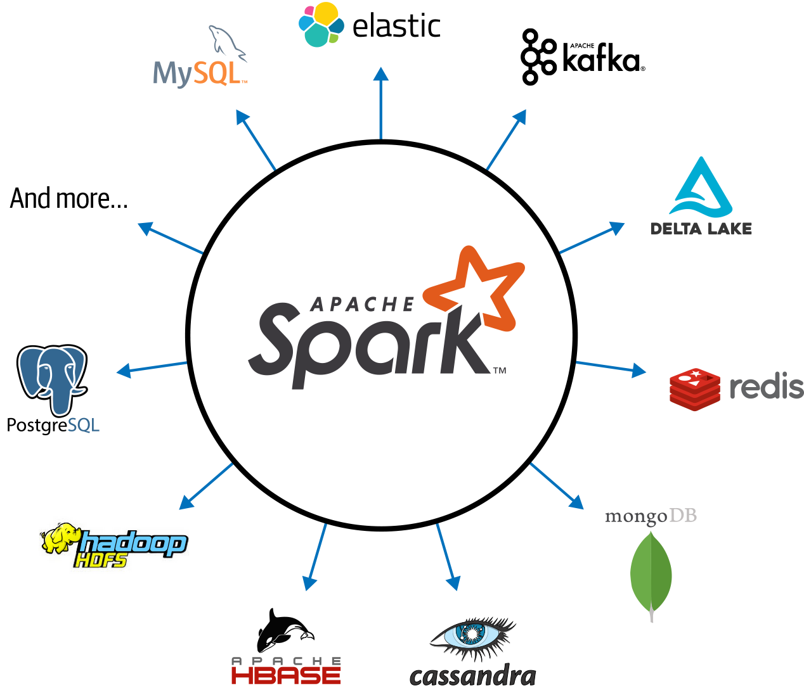
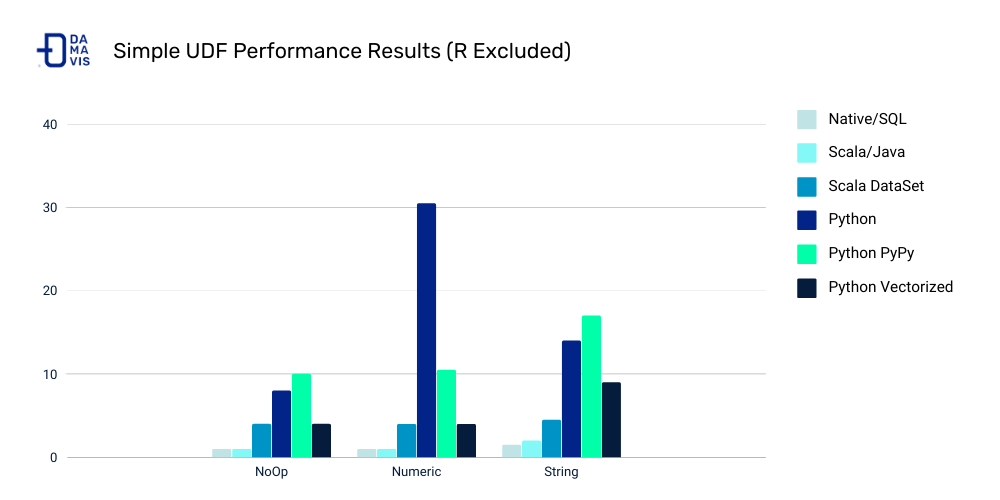
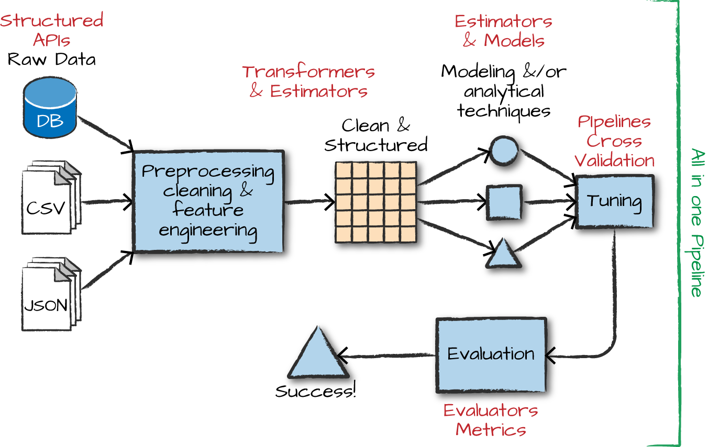

Lecture 9
DataBricks and Spark NLP
Georgetown University
Fall 2025
Looking Back
- Intro to Hadoop and MapReduce
- Hadoop Streaming
- Dask
- Spark RDDs, DataFrames, SparkSQL, SparkML
Future
- Spark Streaming
- Docker containers / serverless functions
- Data engineering
Today
Project Introduction
Spark NLP
Lab:
- SparkNLP
Review of Prior Topics
AWS Academy
Credit limit - $100
Course numbers:
- Course #1 - 24178
- Course #2 - 27354
- Course #3 - 22802
- Course #4 - 26418
STAY WITH COURSE 24178 UNLESS YOU HAVE RUN OUT OF CREDITS OR >$90 USED!
Note that you will have to repeat several setup steps:
- security group
- EC2 keypair uploading (the AWS part only)
- any S3 uploading or copying as well as bucket creation as necessary
- EMR configuration
Review of File Systems
What are the possible file system options for each item: S3, HDFS, Local file system
hadoop jar /usr/lib/hadoop/hadoop-streaming.jar #1
-files basic-mapper.py,basic-reducer.py #2
-input /user/hadoop/in_data #3
-output /user/hadoop/in_data #3
-mapper basic-mapper.py #4
-reducer basic-reducer.py #4
- Local file system
- Local file system/S3/ OR HDFS – UPDATE
- HDFS or S3
- UPDATE – It’s complicated - “The -files option creates a symlink in the current working directory of the tasks that points to the local copy of the file.” Location of #4 can be:
- Symlinked file (one you passed with
-files) in the pwd in distributed containers - Executable path (local to a worker) that is consistent across all workers on the cluster
Connected and extensible

Caching and Persistence
By default, RDDs are recomputed every time you run an action on them. This can be expensive (in time) if you need to use a dataset more than once.
Spark allows you to control what is cached in memory.
To tell spark to cache an object in memory, use persist() or cache():
cache():is a shortcut for using default storage level, which is memory onlypersist():can be customized to other ways to persist data (including both memory and/or disk)
collect CAUTION

Spark UI - Executors

UDF Speed Comparison

Costs:
- Serialization/deserialization (think pickle files)
- Data movement between JVM and Python
- Less Spark optimization possible
Other ways to make your Spark jobs faster source:
- Cache/persist your data into memory
- Using Spark DataFrames over Spark RDDs
- Using Spark SQL functions before jumping into UDFs
- Save to serialized data formats like Parquet
Transformers
Transformers take DataFrames as input, and return a new DataFrame as output. Transformers do not learn any parameters from the data, they simply apply rule-based transformations to either prepare data for model training or generate predictions using a trained model.
Transformers are run using the .transform() method

Estimators
Estimators learn (or “fit”) parameters from your DataFrame via the .fit() method, and return a model which is a Transformer

Pipelines

Pipelines
Pipelines combine multiple steps into a single workflow that can be easily run. * Data cleaning and feature processing via transformers, using stages * Model definition * Run the pipeline to do all transformations and fit the model
The Pipeline constructor takes an array of pipeline stages

Why Pipelines?
Cleaner Code: Accounting for data at each step of preprocessing can get messy. With a Pipeline, you won’t need to manually keep track of your training and validation data at each step.
Fewer Bugs: There are fewer opportunities to misapply a step or forget a preprocessing step.
Easier to Productionize: It can be surprisingly hard to transition a model from a prototype to something deployable at scale, but Pipelines can help.
More Options for Model Validation: We can easily apply cross-validation and other techniques to our Pipelines.
Project Introduction
Reddit Data!

Comparison of social data infrastructure
Data Dictionary

Next Steps
- Start working with your group to conduct EDA on the dataset
- Initial data questions - understand the structure of the data!
- Define your business questions - how do you plan to work with this data
- Look into external data to merge with your Reddit data
Basic requirements will be published on Thursday
Deadline for Project Milestone 1: EDA Monday November 7
Start your AWS Spark Cluster
Text Analytics with Spark
Spark methods for text analytics
String manipulation SQL functions:
F.length(col),F.substring(str, pos, len),F.trim(col),F.upper(col), …ML transformers:
Tokenizer(),StopWordsRemover(),Word2Vec(),CountVectorizer()
Tokenizer
>>> df = spark.createDataFrame([("a b c",)], ["text"])
>>> tokenizer = Tokenizer(outputCol="words")
>>> tokenizer.setInputCol("text")
>>> tokenizer.transform(df).head()
Row(text='a b c', words=['a', 'b', 'c'])
>>> # Change a parameter.
>>> tokenizer.setParams(outputCol="tokens").transform(df).head()
Row(text='a b c', tokens=['a', 'b', 'c'])
>>> # Temporarily modify a parameter.
>>> tokenizer.transform(df, {tokenizer.outputCol: "words"}).head()
Row(text='a b c', words=['a', 'b', 'c'])
>>> tokenizer.transform(df).head()
Row(text='a b c', tokens=['a', 'b', 'c'])StopWordsRemover
>>> df = spark.createDataFrame([(["a", "b", "c"],)], ["text"])
>>> remover = StopWordsRemover(stopWords=["b"])
>>> remover.setInputCol("text")
>>> remover.setOutputCol("words")
>>> remover.transform(df).head().words == ['a', 'c']
True
>>> stopWordsRemoverPath = temp_path + "/stopwords-remover"
>>> remover.save(stopWordsRemoverPath)
>>> loadedRemover = StopWordsRemover.load(stopWordsRemoverPath)
>>> loadedRemover.getStopWords() == remover.getStopWords()
True
>>> loadedRemover.getCaseSensitive() == remover.getCaseSensitive()
True
>>> loadedRemover.transform(df).take(1) == remover.transform(df).take(1)
True
>>> df2 = spark.createDataFrame([(["a", "b", "c"], ["a", "b"])], ["text1", "text2"])
>>> remover2 = StopWordsRemover(stopWords=["b"])
>>> remover2.setInputCols(["text1", "text2"]).setOutputCols(["words1", "words2"])
>>> remover2.transform(df2).show()
+---------+------+------+------+
| text1| text2|words1|words2|
+---------+------+------+------+
|[a, b, c]|[a, b]|[a, c]| [a]|
+---------+------+------+------+Application of Sentiment Analysis in PySpark
Data: S&P company earnings calls - 10s of millions of text statements
Method: proximity-based sentiment analysis
Tech: PySpark, Python UDFs, lots of list comprehensions!
Outcome: Time series trends of company concerns about supply chain related issues
Application continued
Example: find the A’s within a certain distance of a Y
# within2 -> 0
X X X X Y X X X A
# within2 -> 1
X X A X Y X X X A
# within2 -> 2
X A X A Y A X X A
# within4 -> 3
A X A X Y X X X A- Count the number of
Y’s in the text that have anAnear enough to them - Aggregate at scale!
- Project uses
Tokenizer()andStopWordsRemover()
JonSnowLabs Spark NLP Package
Why use UDFs, run proximity-based sentiment? Let’s use more advanced natural language processing packages!
Which libraries have the most features?
Comparing NLP Packages
Just because it is scalable does not mean it lacks features!
Most Popular AI/ML Packages

Spark NLP is faster than SpaCy
Benchmark for training a pipeline with sentence bounder, tokenizer, and POS tagger on a 4-core laptop
Why??
- Whole stage code generation, vectorized in-memory columnar data
- No copying of text in memory
- Extensive profiling, config & code optimization of Spark and TensorFlow
- Optimized for training and inference
Aaaaannndddd…. it scales!
Spark NLP
Reusing the Spark ML Pipeline
Unified NLP & ML pipelines
End-to-end execution planning
Serializable
Distributable
Reusing NLP Functionality
TF-IDF calculation
String distance calculation
Stop word removal
Topic modeling
Distributed ML algorithms

Spark NLP Terminology
Annotators
- Like the ML tools we used in Spark
- Always need input and output columns
- Two flavors:
- Approach - like ML estimators that need a
fit()method to make an Annotator Model or Transformer - Model - like ML transformers and uses
transform()method only
- Approach - like ML estimators that need a
Annotator Models
- Pretrained public versions of models available through
.pretained()method
Q: Do transformer ML methods ever replace or remove columns in a Spark DataFrame?
No!! They only add columns.
Spark NLP Sentiment Example

Spark NLP Pipeline Example
Spark NLP Pipeline Types
Spark Pipeline
- Efficiently run on a whole Spark Dataframe
- Distributable on a cluster
- Uses Spark tasks, optimizations & execution planning
- Used by
PretrainedPipeline.transform()
Light Pipeline
- Efficiently run on a single sentence
- Faster than a Spark pipeline for up to 50,000 local documents
- Easiest way to publish a pipeline as an API
- Used by
PretrainedPipeline.annotate()
Recursive Pipeline
- Give annotators access to other annotators in the same pipeline
- Required when training your own models
Essential Spark NLP reading
Overall Code Example
from pyspark.ml import Pipeline
document_assembler = DocumentAssembler()\
.setInputCol(“text”)\
.setOutputCol(“document”)
sentenceDetector = SentenceDetector()\
.setInputCols([“document”])\
.setOutputCol(“sentences”)
tokenizer = Tokenizer() \
.setInputCols([“sentences”]) \
.setOutputCol(“token”)
normalizer = Normalizer()\
.setInputCols([“token”])\
.setOutputCol(“normal”)
word_embeddings=WordEmbeddingsModel.pretrained()\
.setInputCols([“document”,”normal”])\
.setOutputCol(“embeddings”)Code Example for DocumentAssembler
import sparknlp; from sparknlp.base import *
from sparknlp.annotator import *; from pyspark.ml import Pipeline
data = spark.createDataFrame([["Spark NLP is an open-source text processing library."]]).toDF("text")
documentAssembler = DocumentAssembler().setInputCol("text").setOutputCol("document")
result = documentAssembler.transform(data)
result.select("document").show(truncate=False)
+----------------------------------------------------------------------------------------------+
|document |
+----------------------------------------------------------------------------------------------+
|[[document, 0, 51, Spark NLP is an open-source text processing library., [sentence -> 0], []]]|
+----------------------------------------------------------------------------------------------+Continued
result.select("document").printSchema
root
|-- document: array (nullable = True)
| |-- element: struct (containsNull = True)
| | |-- annotatorType: string (nullable = True)
| | |-- begin: integer (nullable = False)
| | |-- end: integer (nullable = False)
| | |-- result: string (nullable = True)
| | |-- metadata: map (nullable = True)
| | | |-- key: string
| | | |-- value: string (valueContainsNull = True)
| | |-- embeddings: array (nullable = True)
| | | |-- element: float (containsNull = False)Using HuggingFace Transformers Models with SparkNLP
https://github.com/JohnSnowLabs/spark-nlp/discussions/5669
from transformers import TFDistilBertForSequenceClassification, DistilBertTokenizer
from sparknlp.annotator import *
from sparknlp.base import *
MODEL_NAME = 'distilbert-base-uncased-finetuned-sst-2-english'
tokenizer = DistilBertTokenizer.from_pretrained(MODEL_NAME)
tokenizer.save_pretrained('./{}_tokenizer/'.format(MODEL_NAME))
model = TFDistilBertForSequenceClassification.from_pretrained(MODEL_NAME)
model.save_pretrained("./{}".format(MODEL_NAME), saved_model=True)
asset_path = '{}/saved_model/1/assets'.format(MODEL_NAME)
!cp {MODEL_NAME}_tokenizer/vocab.txt {asset_path}
sequenceClassifier = DistilBertForSequenceClassification.loadSavedModel(
'{}/saved_model/1'.format(MODEL_NAME),spark)\
.setInputCols(["document",'token'])\
.setOutputCol("class").setCaseSensitive(True).setMaxSentenceLength(128)
#### WHERE IS THIS SAVING TO???
sequenceClassifier.write().overwrite().save("./{}_spark_nlp".format(MODEL_NAME))Readings
Required:
Encouraged: